Compare the prototype approaches
Six ways to navigate the same speaker-and-tools learning journey. Open a prototype to try its interaction, or select a screenshot to inspect the captured state at full size.
Desktop views
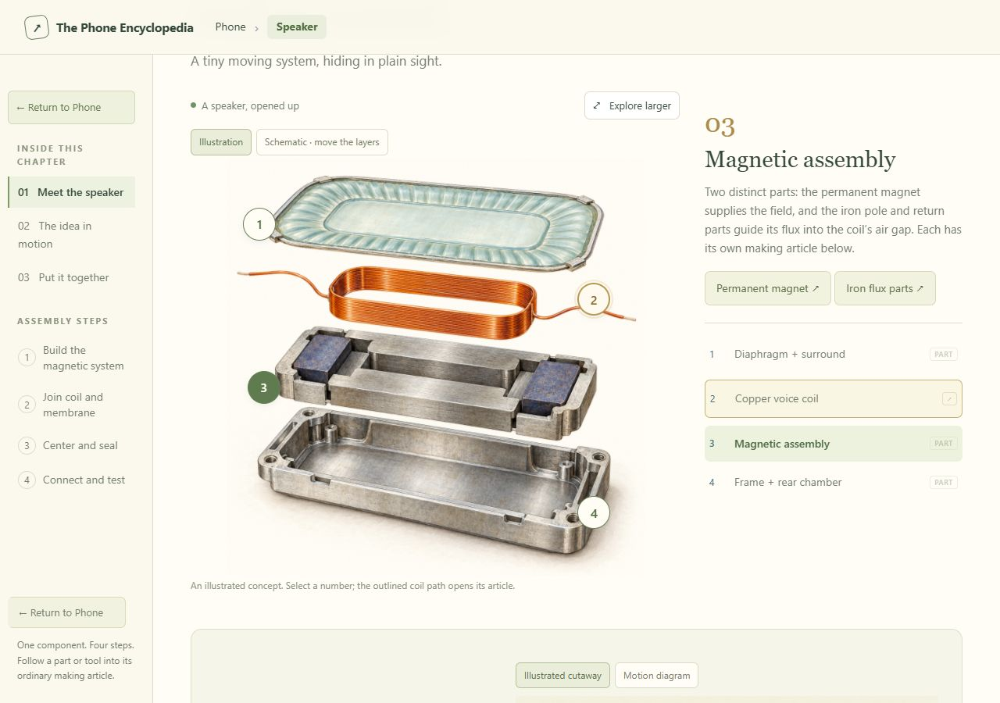
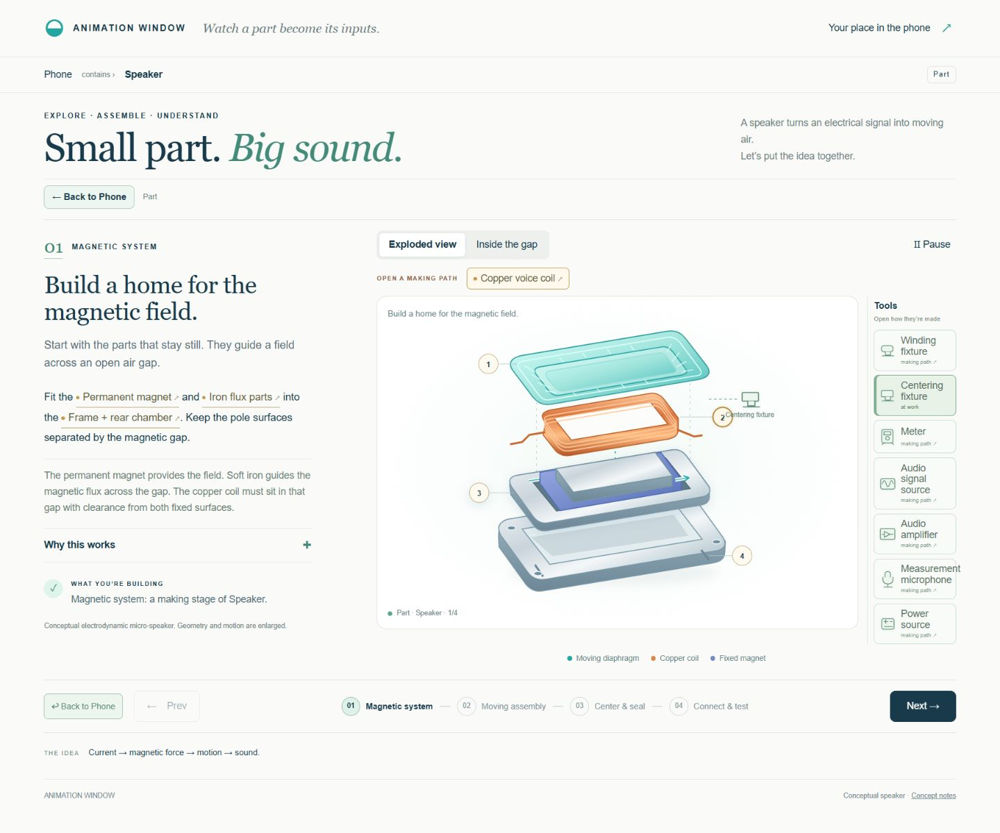
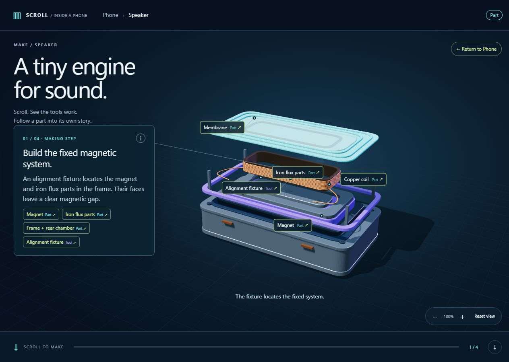
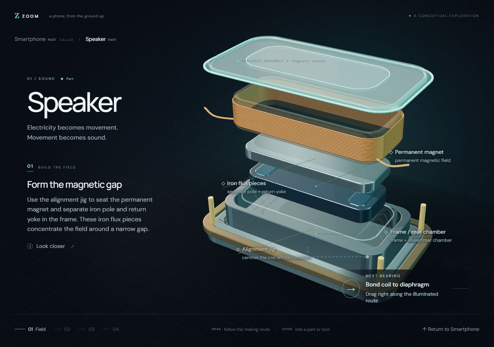
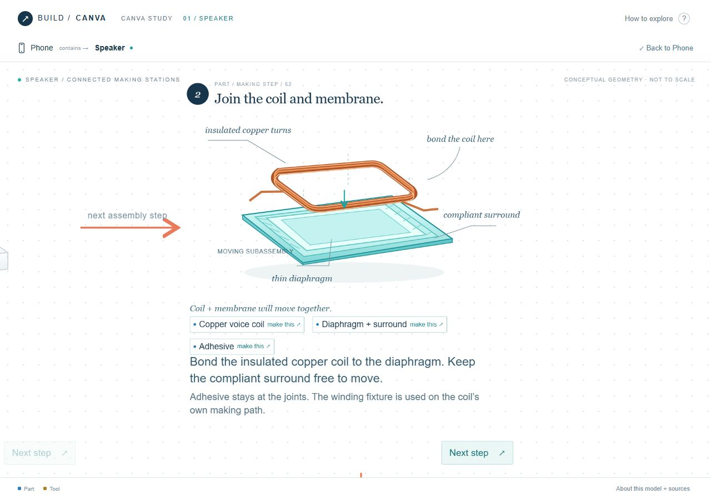
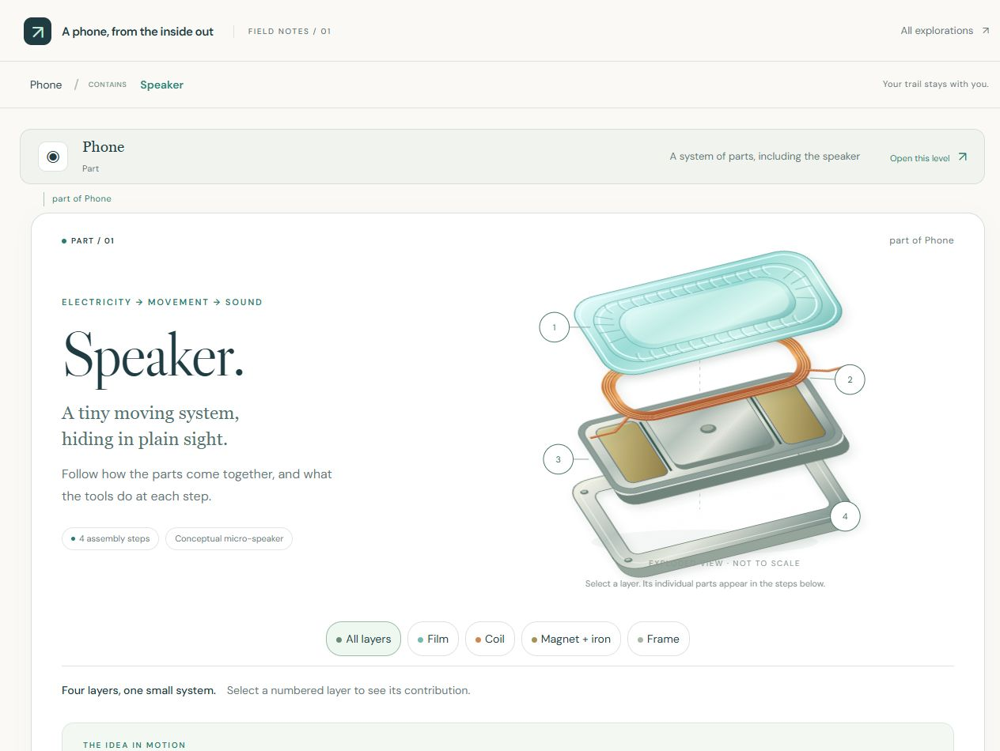
Phone-sized views
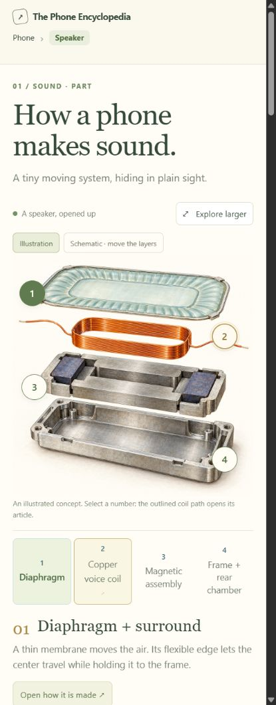
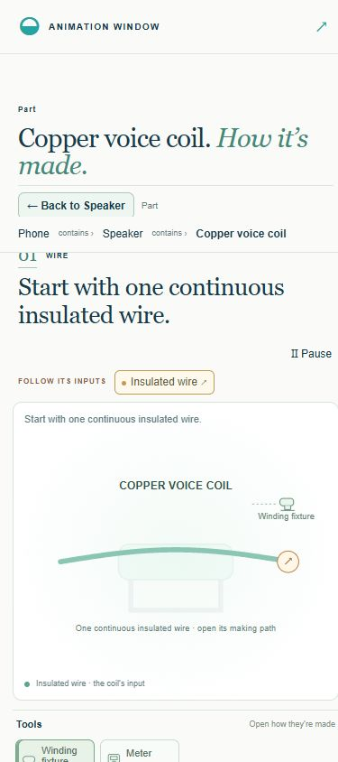
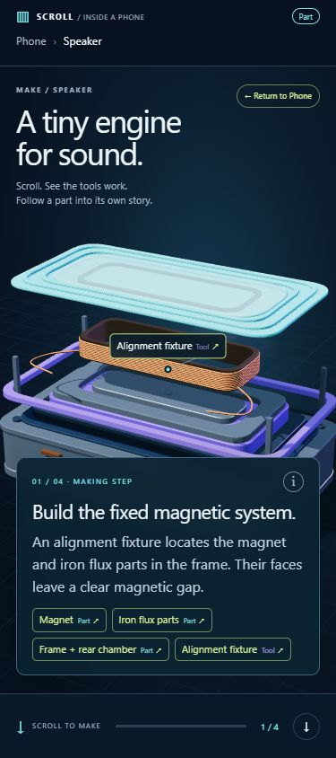
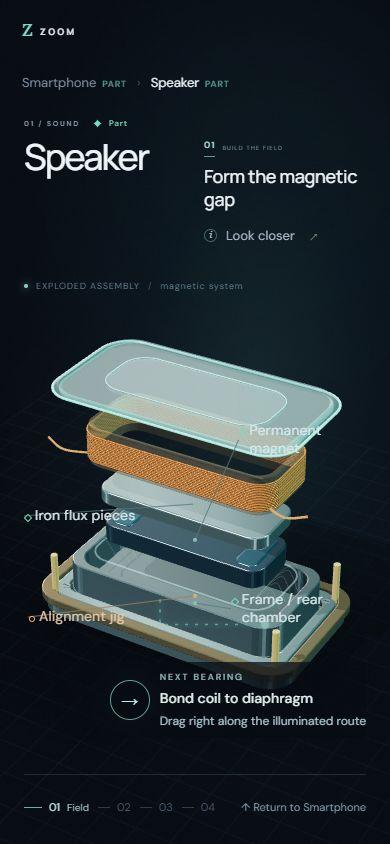
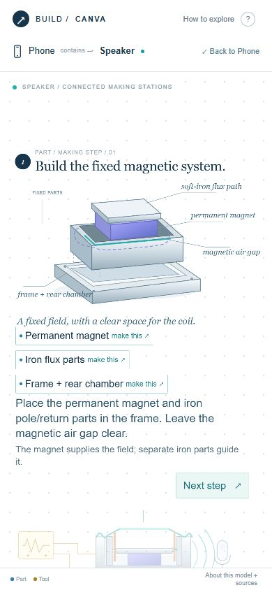
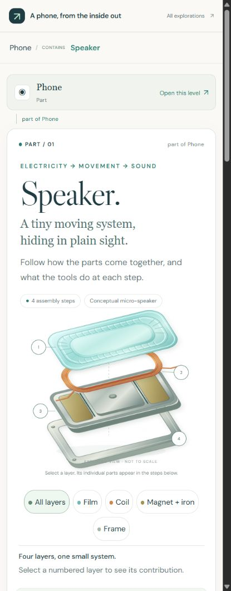
The narrow-screen images show phone-sized layouts captured in Chrome. They do not establish native touch or device testing. These are selected prototype states, and stand-in content remains marked in the live prototypes; a still image cannot demonstrate the full animation or return behavior.